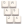
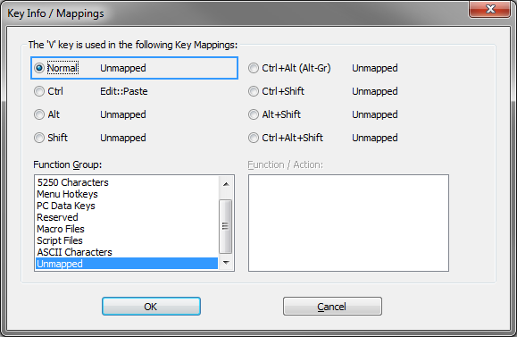

The Keyboard Options dialog is used to map BlueZone program
functions to key sequences on the keyboard and to control various
keyboard related options.
From the BlueZone menu bar, click or click the Keyboard icon

on
the BlueZone toolbar. The Keyboard Options dialog opens, which contains
the
Key Mappings (a
bitmap image of a keyboard),
Options, and
More Options tabs.
Refer
to Mapping keyboards for
more information.
Key Mappings tab
Note: If you have
installed a non-English version of BlueZone, the default keyboard
map that displays is based on your currently selected language in
the Regional and Language Options in Windows.
- Gray keys
- Gray keys can be mapped. If you click a gray key, the Key Info/Mappings
window opens and lists all of the key mappings for each function group.
It also lists any combination key mappings that this key is used in.
The
following figure shows the associated mappings with the V key. The
Ctrl key is mapped to the Edit::PasteMenu Hotkeys. All of the other
available mappings are unmapped.
Figure 1. IBM iSeries key mappings information

- Red keys
- Red keys cannot be used to map 5250 Functions.
- Yellow keys
- Yellow keys are caution keys. Care should be taken when using
the yellow keys to map 5250 Functions. The caution keys include the
Alt keys and the Esc key. Windows uses the Alt keys with menu accelerators
and the Esc key is the default BlueZone Full Screen Hotkey key.
- Options
- Keyboard Type: A drop-down menu that contains
a list of keyboard options for BlueZone. Select the type of keyboard
required for your display:
Note: If you select either the Unicomp 0852-M 122
Key or the KeyTronic KB3270/Plus keyboard,
a 122 Keys button displays in the upper right
hand corner of the dialog. Click this button to display a floating
keyboard bitmap of the extended keys.
- Functions Group: A list box that contains
a list of a the BlueZone Function Groups that can be mapped.
- 5250 Functions: Lists the 5250 functions
and what keys they are currently mapped to.
- 5250 Characters: Lists special 5250 characters
and what keys they are currently mapped to.
- Menu Hotkeys: Lists the BlueZone menu items
available for key mapping.
- PC Data Keys: Lists the PC Keyboard Keys
available for key mapping.
- Reserved: Not used at this time.
- APL Characters: Lists APL graphics characters
and what they are currently mapped to.
- Macros Files: Lists the macro files available
for key mapping. BlueZone macro files are created by selecting from
the BlueZone menu bar.
Note: When Macro Files is selected, only macro
files from the BlueZone program directory will be listed for selection.
- Script Files: Lists the script files available
for key mapping. BlueZone script files are created by selecting from
the BlueZone menu bar.
Note: When Script Files is selected, only script
files from the BlueZone program directory will be listed for selection.
- Functions: Lists the functions available
for key mapping. The functions displayed are dependent on which function
is selected in the Functions Group list box above.
For example,
if 5250 Functions is selected the Functions Group List Box, then only
5250 Functions will be displayed in the Functions window along with
their respective Key Mappings in the Key Mappings window.
- Key Mappings: Lists the key mapping or
mappings if any, that will execute the highlighted function in the
Functions list box.
- Key Mappings Buttons
-
Options tab
- Options
- Operate 5250 Function Backspace as a Destructive Backspace:
If enabled, the 5250 Function Backspace deletes the character underneath
the cursor after the cursor has been moved.
- Auto-Reset when keyboard is locked (an audible sound
will be heard): If enabled, the 5250 Function Reset is
automatically executed if the keyboard state becomes locked with an
“X Error” condition.
- Auto Tab After Reset: If enabled, an Auto-Tab
is issued immediately after the keyboard is unlocked by the Auto-Reset
feature above. The purpose of this feature is to automatically bring
the cursor to the closest field of entry.
- Immediate Auto-Reset: If enabled, the Auto-Rest
is issued immediately.
- Auto-Rest when Next Key is Pressed: If
enabled, the Auto-Rest is issued only after a key is pressed.
- Operate 5250 Function Rapid Left/Right as Word Rapid
Left/Right: If enabled, the 5250 Functions Rapid Left
and Rapid Right operate as Word Left and Word Right.
- Keyboard Inactivity Timer (Minutes): If enabled,
the user can adjust how many minutes of inactivity need to pass before the session
disconnects (maximum of 999 minutes). If this feature is disabled, the session disconnects
after the default amount of time set by the system administrator in the
global.ini file.